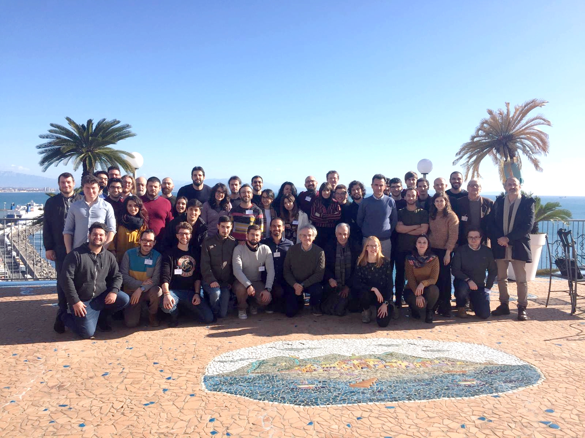

Academic
Background
Whilst a PhD student at UCL, I've been a senior postgraduate teaching instructor in Computing for Mathematical Physics within the Physics department. In the Mathematics department I've been a demonstrator for modules including General Relativity, Advanced Linear Algebra and Mathematics for Physics and Astronomy.
I previously completed a BSc in Theoretical Physics (2017) followed by an MSc in Gravity, Particles and Fields (2018) at the University of Nottingham.
Publications
- Modified gravity: a unified approach to metric-affine models (with C. Boehmer) [2301.11051 gr-qc] (2023)
- Dynamical systems analysis of f(Q) gravity (with C. Boehmer and R. Lazkoz) [2303.04463 gr-qc] (2023)
- Cosmological dynamical systems in modified gravity (with C. Boehmer and R. Lazkoz) [2201.09588 gr-qc] (2022)
- Modified gravity: a unified approach (with C. Boehmer) [2103.15906 gr-qc] (2021)
Talks and conferences
Second-order modifications of gravity
- Talk at University of Cambridge DAMTP GR Seminar, Cambridge, June 2023
Studying f(T) and f(Q) gravity with dynamical systems in cosmology
- Talk at Particle Cosmology Group at University of Science and Technology of China (USTC), Hefei, China, May 2023
Geometric modifications of gravity
- Invited speaker at 2023 International Conference of Deep Space Sciences, Hefei, China, April 2023
New modifications in metric-affine gravity
- Rapid-fire talk at UK Cosmology meeting, Sussex, January 2023
Dynamical systems in second-order modified cosmology
- Talk at the London-Oldenburg Relativity Seminar, June 2022
Cosmological dynamical systems in modified gravity
- Talk at the Proca seminar series, May 2022
Modifying General Relativity with Boundary Terms
- Talk at the University of Tartu Theoretical physics seminar, September 2021
Modified Gravity and Boundary Terms - Presentation at UCL, June 2021
The Higgs Mechanism - Talk at the University of Nottingham 2018
Topological Defects in Cosmology - Presentation at the University of Nottingham 2018
Projects and visits
Visiting docotral scholar at the Particle Cosmology Group at USTC
funded by the University of Science and Technology of China (USTC), April-May 2023
Symmetric Teleparallelism, Hyperfluids and Matter Couplings - International doctoral
visit to the
Laboratory of Theoretical Physics, University of Tartu, Estonia, as part of the
Dora
Plus Grant August-October 2021
Scalar Fields in Cosmology: A Dynamical Systems Approach -
MSc thesis supervised by Prof. Edmund Copeland, University of Nottingham 2018
Vacuum Instability of the Standard Model of Particle Physics - BSc dissertation
supervised by Dr. Peter Millington, University of Nottingham 2017

SIGRAV 2020, Vietri sul Mare, Italy 2020.